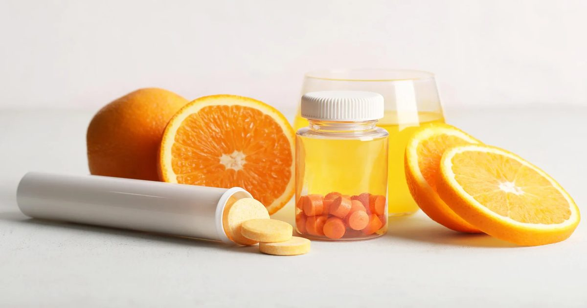

Витамин С связан с меньшим количеством смертей в исследовании заболеваний крови
Витамин С может не только поддерживать иммунную систему.
В исследовании фазы 2 у людей с предраковым раком или раком крови с низким риском ежедневный прием витамина С не замедлял аномальный рост клеток, но был связан с благоприятными изменениями воспаления и меньшим количеством серьезных осложнений.
Исследовательское наблюдение также показало меньшее количество смертей среди участников, принимающих витамин С, чем среди тех, кто получал плацебо.